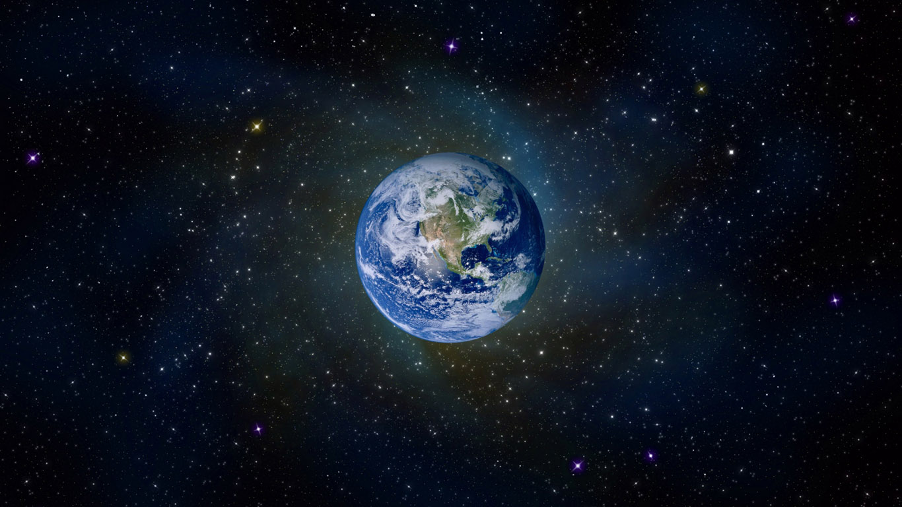

{kind=link}
Как усилить внимание - Заголовок 1 уровня
Сегодня мы конкретно остановимся на технике цветового контраста. Сочетание различных цветов, поможет визуально разделить страницу по блокам и создать контраст ключевых элементов сайта.
Основная задача цветового контраста — управление вниманием пользователя. Цвет поможет усилить важные элементы, и в тот же момент приглушить второстепенные.
Важно взять себе за правило выделять только те элементы, на которых мы хотим сфокусировать внимание посетителя сайта.
Если же вы выделите много элементов, то произойдет расфокусировка, и глазам не за что будет зацепиться. Таким образом, пользователь начнет теряться в предоставленной информации.
В качестве важного элемента, можно выделить кнопку призыва к действию:
{kind=link}
Нумерованный список - заголовок 3 уровня
- Ухудшение восприятия сайта
- Потеря визуальной иерархии
- Затруднение чтения содержимого страницы
- Потеря внимания на ключевых элементах
Маркированный список - заголовок 3 уровня
- Ухудшение восприятия сайта
- Потеря визуальной иерархии
- Затруднение чтения содержимого страницы
- Потеря внимания на ключевых элементах
Вы читаете перевод статьи Николая Бабича “Using Card-Based Design To Enhance UX”. Над переводом работали: Ольга Скулкина и Ринат Шайхутдинов. При поддержке iSpring. iSpring — решение для запуска дистанционного обучения.
{kind=link}